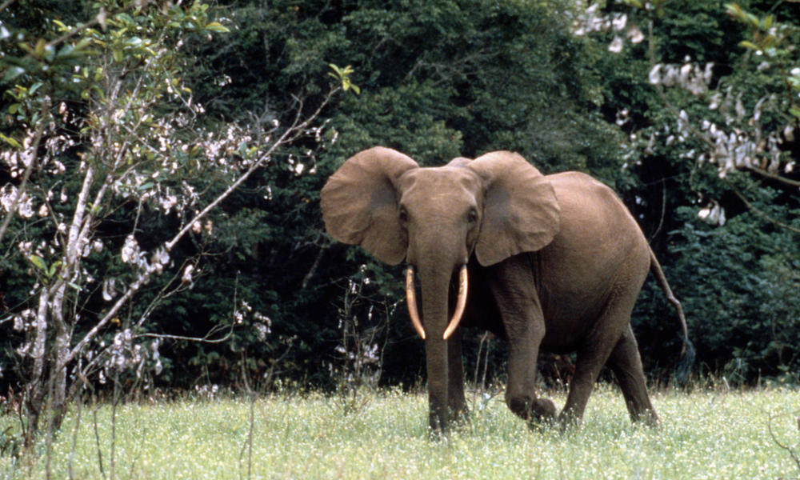

About Elephant Species
There are three species of elephants. First there is the Asian elephant found in India and Southeast Asia. An adult male can weigh up to 8,800 pounds and stand 9 feet tall at the shoulder. An adult female can weigh up to 6,000 and stand 7.9 feet tall at the shoulder. The average life span for the Asian elephant is said to be around 40-50 years. These elephants are endangered to do mass decline mainly between 1970-1980 from being killed for their ivory. Today the greatest threat is losing their habitats of forest and grasslands due to human population increaseing and taking over the elephants homes.

There are 4 subspecies of the Asian elephant. The first subspecies is the Indian elephant that is native to mainland Asia. An adult Indian elephant can weight 11,000 pounds and stand 10 feet tall. They are said to have a life span of 55-70 years.

The second subspecies is the Sumatran elephant. An adult can weigh up to 11,000 pounds and stand up to 10.5 feet tall. This elephant is native to the Indonesian island of Sumatra. They were changed from the endangered list to critically endangered in 2012 since it lost half of its population in just one generation. This is due to human-elephant conflict and loss of habitat. They are said to have a life span of 60-70 years.

The third recognized subspecies is the Sri Lankan Elephant. An adult can weigh over 12,000 pounds and stand over 11 feet tall. Their population is now mainly restricted to the north, east, and southwest regions of Sri Lanka with a life span of 55-70 years. And again these elephants are endangered due to conflict with humans and loss of habitat.

The fianl subspecies is the Borneo Pygmy Elephant. This elephant lives in Malaysia, northeastern Borneo, and Indonesia. An adult can weigh 6,500 to 11,000 pounds and stand at 8.2-9.8 feet tall. These elephants are the samllest subspecies of the Asian elephant and also endangered due to loss of habitat and conflict with humans.

Next is the African Bush Elephant which is the largest of the three species. The African Bush Elephant is also the largest land mammal in the world. An adult male can weigh up to 13,000 pounds while an adult female can weigh up to 6,600 pounds. Adults can be as tall as 13 feet and be 24 feet long. Their life span is said to be 60-70 years. There are also known as African savanna elephants. They are listed under vulnerable with population increasing although they were at risk of extinction due to hunting and poaching primarily between 1970-1990. They can be found in the savanna grasslands, forest within Central and Southern Africa, and partial desert areas.

Then we have the African Forest Elephant. An adult male can weigh up to around 9,000 pounds and stand up to 10 feet tall while an adult female can weigh around the same they are shorter at up to 8 feet tall. They also have a life span of 60-70 years. These elephants are also listed as vulnerable wiht more than 60% of the population poached in the last decade. African forest elephants can be found where there is large dense forest such as central Africa, west Africa, Gabon, and the Democratic Republic of Congo.
Last but not least is the White elephant. White elephants, actually albinos, have for centuries been revered in Burma, Thailand, Laos and other Asian nations. It is said that as of 2020 there are approximately 30 white elephants left in the world. The term derives from the sacred white elephants kept by Southeast Asian monarchs in Burma, Thailand, Laos and Cambodia.[2] To possess a white elephant was regarded (and is still regarded in Thailand and Burma) as a sign that the monarch reigned with justice and power, and that the kingdom was blessed with peace and prosperity. The opulence expected of anyone who owned a beast of such stature was great. Monarchs often exemplified their possession of white elephants in their formal titles (e.g., Hsinbyushin, lit. 'Lord of the White Elephant' and the third monarch of the Konbaung dynasty).[3] Because the animals were considered sacred and laws protected them from labor, receiving a gift of a white elephant from a monarch was simultaneously a blessing and a curse. It was a blessing because the animal was sacred and a sign of the monarch's favour, and a curse because the recipient now had an expensive-to-maintain animal he could not give away and could not put to much practical use.